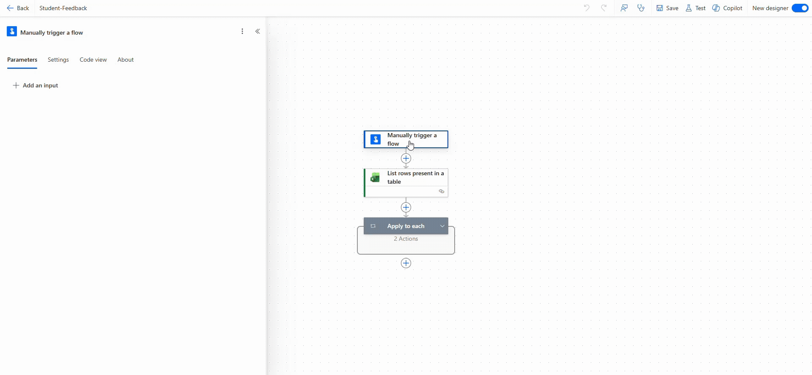
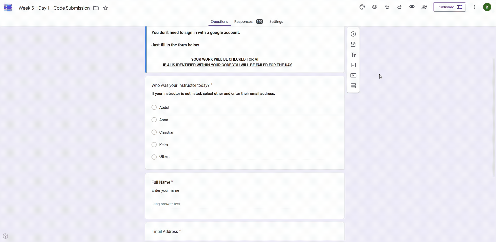

0
Learner Satisfaction
AI, Digital Skills & Technical Education
I design practical technical learning across software, AI, cybersecurity, networking, data, and digital skills. My work combines clear instruction, learner-centred support, and AI-assisted workflows that make education more accessible, consistent, and scalable.

Learner Satisfaction
Technical Delivery
AI & Automation Systems
SEND & DEI Advocacy
About Me
I help learners build confidence with technical subjects by turning complex ideas into clear, practical steps. My background combines software development, digital education, learner support, curriculum design, and inclusive teaching practice.
I teach software development, AI, cybersecurity, networking, data, social media marketing, and digital skills through practical, project-based learning.
I create scaffolded resources, assessment guidance, workshop materials, and learner support systems that make technical content easier to follow.
I design AI-assisted workflows that improve feedback consistency, reduce repetitive admin, and support learner confidence.
Core Expertise
AI Contributions
Designed reusable feedback workflows that support clearer, faster, and more consistent learner guidance.
Built structured resources and guided examples to help learners approach technical tasks with more confidence.
Developed automation-led approaches for repetitive teaching, communication, and admin processes.
Integrated AI into teaching for debugging, planning, review, research, accessibility, and problem solving.
Professional Experience
My experience spans funded adult education, bootcamps, apprenticeship workshops, curriculum development, learner support, quality assurance, and inclusive digital delivery.
Just IT / Leep Group
Delivering Level 2 digital skills, Level 3 software development, and Level 4 apprenticeship workshops across technical education pathways.
Creating curriculum materials, assessment resources, learner support guides, and AI-assisted workflows that improve clarity, consistency, and accessibility.
Supporting apprentices, ESOL learners, career changers, and mixed-ability cohorts while contributing to safeguarding, quality assurance, and inclusive practice.
Code Nation
Delivered Level 2, Level 3, and Level 4 software development provision, teaching JavaScript, Python, HTML, CSS, MySQL, Agile methods, testing, and debugging.
Built project-based learning resources, technical workshops, and portfolio-focused activities aligned to employer expectations.
Introduced AI-assisted development approaches to support debugging, learner productivity, and workflow improvement.
Code Nation
Led inclusion, accessibility, and learner advocacy initiatives across digital education programmes.
Supported staff and learners through mentoring, awareness work, inclusive practice guidance, and outreach activity.
Promoted more accessible routes into technology careers for learners from underrepresented backgrounds.
NHS, Community & Support Services
Worked across youth mental health, safeguarding, and community support environments, supporting vulnerable people through structured care, mentoring, and person-centred approaches.
Developed strong communication, resilience, de-escalation, safeguarding awareness, and supportive intervention skills.
Conservation, Veterinary & Educational Roles
Worked across wildlife rehabilitation, conservation, veterinary support, and animal care in the UK and internationally, including conservation work in South Africa.
Supported animal welfare, public education, rehabilitation programmes, and high-responsibility work with complex and exotic species.
Selected Projects
Workflow systems, educational tooling, automation pipelines, AI-assisted feedback systems, and scalable support platforms designed to improve operational efficiency and learner experience.

Structured AI-supported feedback and workflow systems designed to improve consistency, reduce repetitive admin, and support scalable technical education.

Event-driven learner QA and automated code checking systems designed to improve consistency, reduce repetitive review, and support scalable technical education workflows.
Frontend, interaction, API, educational, and creative development projects built using JavaScript, React, AI integration, responsive design, and dynamic user experiences.

Interactive author platform featuring an AI-integrated character chatbot that allows visitors to hold dynamic conversations with Sophie from Memoirs of a Vampyr's Daughter.
View Project
Interactive Pokémon application using API integration, responsive design, filtering systems, and dynamic rendering.
View Project
Interactive recommendation engine using custom JSON datasets, conditional logic, and dynamic user-driven outcomes.
View Project
Educational cybersecurity platform using gamified interaction and accessible design to explain technical security concepts.
View ProjectJavaScript card game using comparison logic, dynamic rendering, and themed interaction.
Virtual PetInteractive JavaScript pet care app using state management and dynamic UI updates.
FestpodResponsive podcast website focused on layout, branding, and content presentation.
Elvish TranslatorFantasy-inspired translation tool using JavaScript and frontend interaction.
Beyond Technical Delivery
I am interested in how technology can make learning clearer, more inclusive, and more empowering. My wider work brings together technical education, AI systems, creative development, and practical support for different kinds of learners.
Building scalable approaches for feedback, automation, accessibility, and learner support.
Creating clearer learning experiences for SEND learners, ESOL learners, and mixed-ability groups.
Combining storytelling, frontend development, design, and interactive digital experiences.
Bringing conservation, rehabilitation, and animal welfare experience into an empathetic teaching approach.